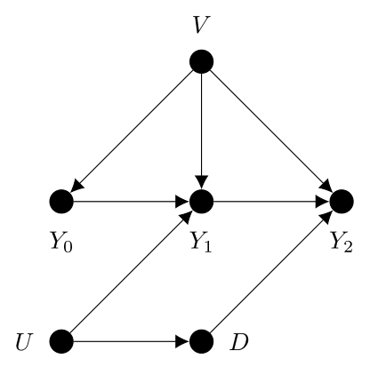
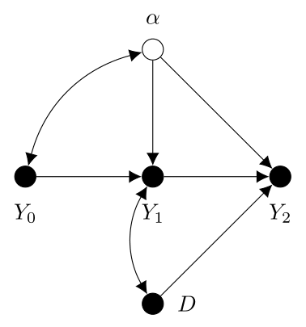

It has been argued that including the lagged dependent variable in panel models will open up unintended back-door paths and bias the estimates of the causal variable. We show that panel analysis in the structural equation modeling framework gets around this issue. Including the lagged dependent variable has the benefit of closing back-door paths due to unobserved time-varying confounders. We demonstrate this by looking at simulated data in the lavaan package for R.
1 Introduction
There is a long tradition in sociology and psychology of using cross-lagged panel models to investigate dynamic processes (Rogosa 1980) in structural equation modeling (SEM). These usually look at the lagged bidirectional effects of two variables (cross-lagged paths, CL) while holding the previous values of these variables constant (autoregressive paths, AR).
At the same time, such models have been shown to be biased in the presence of time-invariant unobserved heterogeneity. Effective ways to incorporate time-invariant unobserved heterogeneity into cross-lagged panel models have been around for several decades now (e.g., Kenneth A. Bollen and Curran 2004; Curran and Bollen 2001) and this topic has experienced renewed interest in the last several years (Curran et al. 2014; Hamaker, Kuiper, and Grasman 2015).
The basic idea of cross-lagged panel models that account for unobserved time-invariant confounders can also be generalized to ‘unidirectional’ models that focus on the effect of one variable on another while de-emphasizing the question of reverse causality (Allison, Williams, and Moral-Benito 2017; Moral-Benito, Allison, and Williams 2018; Williams, Allison, and Moral-Benito 2018). We could call these ‘dynamic fixed effects’ models because they all account for both unobserved time-invariant heterogeneity as well as state dependence by including the lagged dependent variable (lagged DV or LDV).
Indeed (Kühnel and Mays 2018) argue that the inclusion of the LDV make such models more desirable than ‘static fixed effects’ models (which do not include the lagged dependent variable) because they potentially account for confounding by certain time-varying variables, as well.
In this brief article, we will outline the arguments for and against the inclusion of the LDV and then show that the usual SEM approach to panel modelling is not generally affected by the criticism. We hope to convince readers of the usefulness of the broad class of (cross-lagged) dynamic panel models with fixed effects in SEM.
2 Benefits of the LDV
Consider an empirical example by Coleman, Hoffer, and Kilgore (1982) and outlined in Morgan and Winship (2014). There, Coleman and colleagues were looking to assess the causal effect of attending a Catholic school as opposed to public school on achievement, as measured by pupils’ test scores. The direct acyclic graph (DAG) shown in Figure \(\ref{fig-ldv-1}\) summarizes their hypothesized data generating process (DGP), where black circles represent observed variables and white ones unobserved variables.1
(a) Without LDV
(b) With LDV
Figure 1: Catholic school example from Coleman, Hoffer, and Kilgore (1982)
In this DAG, \(Y_{10}\) represents the pupil’s test score in grade 10, \(X\) are observed determinants of test scores and \(O\) are observed background factors that influence test scores, the determinants of test scores, the selection of school system, as well as the unobserved factors in \(U\). For its part, \(U\) could contain any number of potentially umeasured things like motivation or intelligence, that would impact the choice of school system (Catholic schools might prefer to admit intelligent pupils) and the pupil’s test scores themselves.
Conditioning on \(X\) and \(O\) would close all back-door paths except \(Y_{10} \leftarrow D \leftarrow U \rightarrow Y_{10}\). Because \(U\) contains all the unobserved determinants of the causal variable and the outcome, it cannot be conditioned on and the causal effect of interest is unidentified (Morgan and Winship 2014, 270).
Coleman, Hoffer, and Kilgore (1982) came to a solution to this problem by collecting data on the pupils’ test scores two years later, in grade 12. By looking at the DAG in Figure \(\ref{fig-ldv-2}\), we can see that \(Y_{10}\) “screen[s] off the effects of the variables in \(U\) on \(Y_{12}\)” (Morgan and Winship 2014, 270). Indeed, by focusing on test scores in grade 12 and including the lagged measure from grade 10 in the model, the back-door paths over the unobservables in \(U\) are blocked and the causal effect of \(D\) on \(Y_{12}\) is identified.
Note that \(U\) could potentially include the unmeasured outcome even further in the past. In this way, the inclusion of the lagged dependent variable also accounts for endogeneity, where the causal variable is impacted by previous outcomes. An example given by Wooldridge (2012, 313) concerns the explanation of crime as a function of police expenditure. It is plausible that more is spent on policing in areas where crime rates have been high in the past. Simply regressing the crime rate on expenditure will likely be misleading, because where there is a high crime rate, there will be increased spending, so the effect of spending on crime may even be positive.2 Including the lagged crime rate allows for an intuitive interpretation of the effect of expenditure: it is the difference in crime rate between two hypothetical cities with the same crime rate in the previous period given a unit change in expenditure (Wooldridge 2012).
3 Arguments Against the LDV
To continue with outlining the issue, let us turn to a simpler DAG as shown in Figure \(\ref{fig-ldv-3}\), which is adapted also from Morgan and Winship (2014, 111, Fig. 4,3).3 In this DAG, we have dropped the observed variables captured in \(X\) and \(O\) from above. Since they are observed, we can drop them from the following discussion without loss of generality. We still have \(D\), the causal variable of interest, and two measures of the outcome, represented by \(Y_{1}\) and \(Y_{2}\). Consistent with the Catholic school example, the inclusion of \(Y_{1}\) as an observed predictor of \(Y_{2}\) closes the back-door path across \(D \leftarrow U \rightarrow Y_{1} \rightarrow Y_{2}\).
Figure 2: Lagged DV as collider from Morgan and Winship (2014)
The novelty of this DAG compared to the previous ones is the inclusion of \(V\). It represents the time-invariant unobserved heterogeneity. It is an unobserved variable that affects the outcome at all points in time. It can also be thought of as the combined effect of all the time-invariant factors affecting the outcome. The issue, outlined in Morgan and Winship (2014), is that if \(V\) is unobserved, then \(Y_{1}\) is also a collider variable and controlling for it therefore opens a new back-door path over \(V\), rendering the causal effect biased.
This point is often the one criticisms of the LDV focus on. Keele and Kelly (2006, 187) write, for example, that “[e]ven when a lagged dependent variable is theoretically appropriate, remaining residual autocorrelation can lead to biased coefficient results.” Here, the remaining residual autocorrelation is the time-invariant unobserved heterogeneity; the unobserved stable factors that cause the outcome to be correlated with itself over time (Andersen 2022). Foster (2010, 1467) echos this, stating “[s]uch analyses [that include the LDV] are problematic. As has long been known in economics and other fields, in the presence of autocorrelation (a relationship between unobservables over time), the resulting estimates have poor statistical properties.” Collischon and Eberl (2020, 297) argue against the LDV in a similar fashion.
The intuition for these arguments can be shown easily. To simplify things, let us assume variables are mean centered and scaled to have a variance of one, as Cinelli, Forney, and Pearl (2022) do. Then, by path tracing, labelling the structural coefficients \(\lambda\), the covariances of the observed variables, \(Y_{2}, Y_{1}, D\) are given by
which does not equal the structural coefficient \(\lambda_{DY_{2}}\), the average causal effect.
This shows the bias resulting from the LDV and Dafoe (2015, 139) suggests that it is therefore only safe to include the LDV when it is not a collider. That is the case when either “there are no unobserved common causes of treatment and the lagged outcome” (if \(U\) were missing from the DAG in Figure \(\ref{fig-ldv-3}\)) or “no unobserved persistent causes of the outcome” (if \(V\) were missing). Partly because of this (along with other theoretical reasons), Brüderl and Ludwig (2014, 342) propose flatly that “LDV models are not useful at all.”
4 The Structural Equation Modeling Approach
The key to the SEM approach, and the reason why cross-lagged and other panel models that include the LDV are so widespread in SEM, has to do with the fact that by using latent variables, the LDV does not open an unblocked back-door path. Panel models in SEM that account for time-invariant unobserved heterogeneity normally work by specifying a latent variable that causes the observed outcome at all points in time. This explicitly accounts for the “remaining residual autocorrelation” (Keele and Kelly 2006, 187), or “persistent causes of the outcome” (Dafoe 2015, 139).
In SEM, the time-invariant unobserved heterogeneity is not unobserved in the classical sense. It represents the conditional (on the other observed variables) covariance between the outcome and itself over time (Andersen 2022). Say we had the linear model
\[\begin{align}
y_{it} & = \mathbf{x}_{it}\pmb{\beta} + \alpha_{i} + \epsilon_{it}, \ i = 1, \ldots, N, \ t = 1, \ldots, T
\end{align}\]
where \(\mathbf{x}_{it} = (d_{it}, y_{it-1})\) and \(\pmb{\beta} = (\beta, \rho)^{\intercal}\), \(\alpha_{i}\) is a latent variable representing the stable factors that change between individuals but not within them, and \(\epsilon_{it}\) is the time-varying error component. Then the covariance of any two columns of the wide-format outcome, conditional on the observed covariates, is just
\[\begin{align}
\text{Cov}(y_{it},y_{is} | \mathbf{x}_{it}) = \text{Var}(\alpha_{i}), \ t \ne s
\end{align}\]
since we normally assume \(\text{Cov}(\epsilon_{it},\epsilon_{is}) = 0, \ t \ne s\) and \(\text{Cov}(\epsilon_{it},\alpha_{i}) = 0, \ t = 1, \ldots, T\).
The SEM approach to modelling time-invariant unobserved heterogeneity as a latent variable in dynamic models relies on our ability to decompose the correlations observed between columns of the wide-format outcome into a part that is due to unobserved time-invariant factors, and the autoregressive component.
This works most reliably when the outcome is at equilibrium, i.e., where the variances and covariances between adjacent columns of the outcome (means, as well, if the mean structure is being analyzed) are not changing drastically from one point in time to the other (Andersen 2021). Ou et al. (2017) refer to such processes as “ongoing stationary.” If the process is not ongoing stationary, then the covariance between adjacent columns of the outcome will be changing, and it may be difficult for the model to properly estimate the autoregressive effect, along with the variance of the latent variable representing the stable factors, see again Andersen (2021).
To ensure both sources of covariance between columns of the wide-format outcome can be properly accounted for, it is advantageous if the process is ongoing stationary, and even better when there are sufficient observations of the outcome over time (ideally more than two).
While these conditions may sound restrictive at first, they simply reflect the assumptions that there are relatively stable individual levels/trajectories around which the temporal measures tend to hover, and that deviations from these tend to revert back to that underlying level/trajectory (Andersen 2021, 6). And these are basically baked-in to the DGP displayed in Figure \(\ref{fig-ldv-3}\), which indeed features an autoregressive effect as well as stable factors affecting the outcome over time. In fact, we can look at Figure \(\ref{fig-ldv-3}\) as a ‘close-up’ of the overall DGP, focusing in on two measures of the outcome, as hardly any conceivable phenomena in the social sciences occur in such a vacuum.4
More on the method for accounting for stable unobserved characteristics in panel models in SEM has been outlined elsewhere (e.g., Allison 2011; Andersen 2022; K. A. Bollen and Brand 2010; Teachman et al. 2001), so we will not describe it in detail here. Instead, we show that by explicitly modeling the time-invariant unobserved heterogeneity, the causal effect of interest can be estimated without bias.
5 A Simulated Example
We construct a simulated dataset to demonstrate the use of SEM in accounting for time-varying and invariant confounders. To ensure the outcome is ongoing stationary, we simulate a ‘spin-up’ phase to allow the variances and covariances to reach equilibrium. Figure \(\ref{fig-ldv-4}\) shows the simulated DGP, where the initial outcomes, \(Y_{0}-Y_{4}\) are treated as ‘unobserved.’ That is, we focus on three measures of the outcome over time, \(Y_{5} - Y_{7}\), along with the causal variable, \(D\), and account for the unobserved variables \(U\) and \(V\) indirectly.

Figure 3: Simulated DGP
We look at linear additive effects. The exogenous variables, as well as the errors, are standard normal. The effect sizes were chosen arbitrarily and can be seen in the code below. The main causal effect of interest, \(D \rightarrow Y7\) is set to the value 0.4.5
Code
# Set seed set.seed(45678)# Load packages library(lavaan)library(dplyr)# Set large sample size n <- 1000Lrho =0.3# Autoregressive effectgamma =0.6# Effect U -> Ddelta =0.5# Effect U -> Y6beta =0.4# Causal effect of interest# Time-invariant unobserved heterogeneity V =rnorm(n, 0, 1)# Simulate spin-up phase to allow Yt to reach equilibriumY0 =1* V +rnorm(n, 0, 1)Y1 = rho * Y0 +1* V +rnorm(n, 0, 1)Y2 = rho * Y1 +1* V +rnorm(n, 0, 1)Y3 = rho * Y2 +1* V +rnorm(n, 0, 1)Y4 = rho * Y3 +1* V +rnorm(n, 0, 1)Y5 = rho * Y4 +1* V +rnorm(n, 0, 1)# Time-varying confounder U =rnorm(n, 0, 1)# Causal variable D = gamma * U +rnorm(n, 0, 1)# Focus on effect D -> Y7, holding Y6 constant Y6 = delta * U + rho * Y5 +1* V +rnorm(n, 0, 1)Y7 = beta * D + rho * Y6 +1* V +rnorm(n, 0, 1)# Put into dataframedf =data.frame(Y0, Y1, Y2, Y3, Y4, Y5, Y6, Y7, D, V, U)
Obviously, if both \(U\) and \(V\) were observed, then we could estimate the model without bias. We can estimate the entire model simultaneously in SEM using the lavaan package in R.
Code
m1 =" Y7 ~ beta*D + rho*Y6 + V Y6 ~ delta*U + V D ~ gamma*U "m1.fit =sem(model = m1, data = df, estimator ="ML") %>%summary()
lavaan 0.6-11 ended normally after 2 iterations
Estimator ML
Optimization method NLMINB
Number of model parameters 9
Number of observations 1000
Model Test User Model:
Test statistic 5.641
Degrees of freedom 3
P-value (Chi-square) 0.130
Parameter Estimates:
Standard errors Standard
Information Expected
Information saturated (h1) model Structured
Regressions:
Estimate Std.Err z-value P(>|z|)
Y7 ~
D (beta) 0.435 0.028 15.659 0.000
Y6 (rho) 0.308 0.029 10.810 0.000
V 1.019 0.052 19.704 0.000
Y6 ~
U (delt) 0.457 0.033 13.741 0.000
V 1.457 0.033 43.592 0.000
D ~
U (gamm) 0.597 0.032 18.704 0.000
Variances:
Estimate Std.Err z-value P(>|z|)
.Y7 1.002 0.045 22.361 0.000
.Y6 1.082 0.048 22.361 0.000
.D 1.007 0.045 22.361 0.000
Here, the causal effect of interest (labeled beta) is unbiased at about 0.435 (the slight discrepancy is due to sampling error).
Now, to see the point Morgan and Winship (2014) were making, let us assume \(V\) is unobserved. Including the lagged dependent variable will close the back-door path over \(U\) but the bias will still be present because \(V\) is unobserved.
lavaan 0.6-11 ended normally after 1 iterations
Estimator ML
Optimization method NLMINB
Number of model parameters 7
Number of observations 1000
Model Test User Model:
Test statistic 49.244
Degrees of freedom 2
P-value (Chi-square) 0.000
Parameter Estimates:
Standard errors Standard
Information Expected
Information saturated (h1) model Structured
Regressions:
Estimate Std.Err z-value P(>|z|)
Y7 ~
D (beta) 0.318 0.032 9.923 0.000
Y6 (rho) 0.748 0.021 35.989 0.000
Y6 ~
U (delt) 0.318 0.056 5.643 0.000
D ~
U (gamm) 0.597 0.032 18.704 0.000
Variances:
Estimate Std.Err z-value P(>|z|)
.Y7 1.388 0.062 22.361 0.000
.Y6 3.139 0.140 22.361 0.000
.D 1.007 0.045 22.361 0.000
The effect of \(D\) on \(Y_{7}\) is biased in this model with an estimated coefficient of 0.318.
In SEM though, \(U\) is explicitly accounted for as a latent variable. It represents the correlation of the outcome with itself over time, over and above the lagged causal variable and the autoregressive effect. In the following model, both \(U\) and \(V\) are still treated as unobserved.
We specify a latent variable to account for time-invariant unobserved heterogeneity with alpha =~ 1*Y6 + 1*Y7 and regress Y7 on both D and Y6. We include Y5 in the model as an exogenous variable, allowing it to covary freely with the stable factors represented by alpha. Allowing the initial observation to covary freely with the stable factors accounts for situations in which the outcome is not yet at equilibrium, see Andersen (2021) and it is the common approach in dynamic models (e.g., Allison, Williams, and Moral-Benito 2017). Including Y5 and regressing Y6 on it further helps the model better differentiate the autoregressive from the stable unit effects.
Note that we use the name alpha here instead of V because lavaan will usually return an error if one of the names of the latent variables overlaps with the name of one of the observed variables.
Finally, since U is now also unobserved, we allow Y6 and D to covary to account for this common cause. Figure \(\ref{fig-ldv-5}\) shows the SEM approach graphically.

Figure 4: Modelling strategy in SEM (m3.fit)
Code
m3 =" # Individual effects to account for V alpha =~ 1*Y6 + 1*Y7 # Regressions Y7 ~ beta*D + rho*Y6 Y6 ~ rho*Y5 # Allow initial outcome to correlate with unit effects alpha ~~ Y5 # Account for U, common cause of Y6 and D D ~~ Y6"m3.fit =sem(model = m3, data = df, estimator ="ML") %>%summary()
lavaan 0.6-11 ended normally after 35 iterations
Estimator ML
Optimization method NLMINB
Number of model parameters 10
Number of equality constraints 1
Number of observations 1000
Model Test User Model:
Test statistic 3.311
Degrees of freedom 1
P-value (Chi-square) 0.069
Parameter Estimates:
Standard errors Standard
Information Expected
Information saturated (h1) model Structured
Latent Variables:
Estimate Std.Err z-value P(>|z|)
alpha =~
Y6 1.000
Y7 1.000
Regressions:
Estimate Std.Err z-value P(>|z|)
Y7 ~
D (beta) 0.428 0.036 11.758 0.000
Y6 (rho) 0.162 0.092 1.761 0.078
Y6 ~
Y5 (rho) 0.162 0.092 1.761 0.078
Covariances:
Estimate Std.Err z-value P(>|z|)
alpha ~~
Y5 1.773 0.264 6.713 0.000
.Y6 ~~
D 0.226 0.047 4.795 0.000
Variances:
Estimate Std.Err z-value P(>|z|)
.Y6 1.005 0.157 6.404 0.000
.Y7 0.891 0.069 12.957 0.000
D 1.360 0.061 22.361 0.000
Y5 3.102 0.139 22.361 0.000
alpha 1.607 0.434 3.700 0.000
Now, the estimate of the causal effect is relatively close to the true parameter at 0.428. And this is not a fluke: we can draw many samples to show that the estimated coefficient is approximately equal to the causal effect.
Code
sim_func =function(rho =0.3, beta =0.4, gamma =0.6, delta =0.5) {# Set large sample size n <- 1000L# Time-invariant unobserved heterogeneity V =rnorm(n, 0, 1)# Simulate spin-up phase to allow Yt to reach equilibrium Y0 =1* V +rnorm(n, 0, 1) Y1 = rho * Y0 +1* V +rnorm(n, 0, 1) Y2 = rho * Y1 +1* V +rnorm(n, 0, 1) Y3 = rho * Y2 +1* V +rnorm(n, 0, 1) Y4 = rho * Y3 +1* V +rnorm(n, 0, 1) Y5 = rho * Y4 +1* V +rnorm(n, 0, 1)# Time-varying confounder U =rnorm(n, 0, 1)# Causal variable D = gamma * U +rnorm(n, 0, 1)# Focus on effect D -> Y7, holding Y6 constant Y6 = delta * U + rho * Y5 +1* V +rnorm(n, 0, 1) Y7 = beta * D + rho * Y6 +1* V +rnorm(n, 0, 1)# Put into dataframe df =data.frame(Y0, Y1, Y2, Y3, Y4, Y5, Y6, Y7, D, V, U)# Fit the model mx =" # Individual effects to account for V alpha =~ 1*Y6 + 1*Y7 # Regressions Y7 ~ beta*D + rho*Y6 Y6 ~ rho*Y5 # Allow initial outcome to correlate with unit effects alpha ~~ Y5 # Account for U, common cause of Y6 and D D ~~ Y6 " mx.fit =sem(model = mx, data = df, estimator ="ML")# Get estimate of beta est =lavInspect(mx.fit, "list") %>%filter(op =="~") %>%filter(label =="beta") %>%select(est) %>%as.numeric()# Return estimate of betareturn(est)}res =replicate(n = 10000L, expr =sim_func())
We can see that the estimated coefficient is unbiased:
Code
mean(res)
[1] 0.3991025
Code
median(res)
[1] 0.39942
and approximately normally distributed around the true structural coefficient of 0.4:
Code
hist(res, breaks =30)
6 Conclusion
The goal of this article was to renew the reader’s confidence in the use of LDVs in panel models. As we discussed, there are good reasons to consider doing so. From a theoretical standpoint, LDVs can capture inertial effects (Wooldridge 2012, 313) where there is expected to be carry-over of the outcome at one point in time to the next (Keele and Kelly 2006). The inclusion of the LDV also gives the main coefficient of interest a desirably intuitive interpretation: a comparison of outcomes between hypothetical units that displayed the same outcome in the previous period, but whose values on the causal variable differ. But perhaps most importantly, the LDV can be effective at closing back-door paths due to unobserved time-varying confounders.
The practice of including the LDV is often criticized and for good reason. In the presence of time-invariant unobserved heterogeneity, the LDV acts as a collider and opens up an unintended back-door path, thus biasing the estimate of the causal effect. But leaving the LDV out means the onus is on the researcher to measure all the potential time-varying confounders, so you’re often “damned if you do, damned if you don’t” (Cinelli, Forney, and Pearl 2022).
The SEM approach gets around this specific criticism of the LDV by explicitly accounting for time-invariant unobserved heterogeneity. This blocks both back-door paths, across (certain) time-varying confounders and time-invariant ones. Thus, the wide use of cross-lagged and other panel models in SEM that account for LDVs is arguably justified.
LDVs are not a silver bullet, however. The researcher’s qualitative hypotheses must hold, as always. The LDV will stop confounding if the simplified DAG in Figure \(\ref{fig-ldv-3}\) (or something equivalent, such as Figure \(\ref{fig-ldv-4}\)) is the true DGP. If the unobserved time-varying confounders affect the current outcome over and above the mediated path over the lagged version, then another unblocked path is opened up. And other assumptions, like the appropriateness of a linear model, must be scrutinized in SEM just as in any other methodology (Kenneth A. Bollen and Pearl 2013).
Finally, we did not look at other potential approaches to LDVs, such as the Arellano-Bond (AB) differenced model (which is perhaps the most promising approach outside of SEM), which tries to use lags even further back from the current outcome as instruments (Brüderl and Ludwig 2014). In a series of simulations, Leszczensky and Wolbring (2019) showed that AB and SEM both performed well under a wide variety of underlying DGPs and assumptions.
Instead, this paper chose to draw attention to an apparently overlooked aspect. At this very moment, a researcher at a sociological conference is likely being alerted to the fact that the LDV is a collider and that their SEM and its results are biased. We believe this should not be a blanket criticism, and that SEM provides a flexible framework for modeling various dynamic processes that suit researchers’ qualitative hypotheses.
7 References
Allison, Paul D. 2011. Fixed Effects Regression Models. Los Angeles, London: Sage Publications.
Allison, Paul D., Richard Williams, and Enrique Moral-Benito. 2017. “Maximum Likelihood for Cross-Lagged Panel Models with Fixed Effects.”Socius: Sociological Research for a Dynamic World 3 (January): 237802311771057. https://doi.org/10.1177/2378023117710578.
Andersen, Henrik Kenneth. 2021. “Equivalent Approaches to Dealing with Unobserved Heterogeneity in Cross-Lagged Panel Models? Investigating the Benefits and Drawbacks of the Latent Curve Model with Structured Residuals and the Random Intercept Cross-Lagged Panel Model.”Psychological Methods Advanced online publication. https://doi.org/10.1037/met0000285.
———. 2022. “A Closer Look at Random and Fixed Effects Panel Regression in Structural Equation Modeling Using Lavaan.”Structural Equation Modeling: A Multidisciplinary Journal 29 (3): 476–86. https://doi.org/10.1080/10705511.2021.1963255.
Bollen, K. A., and J. E. Brand. 2010. “A General Panel Model with Random and Fixed Effects: A Structural Equations Approach.”Social Forces 89 (1): 1–34. https://doi.org/10.1353/sof.2010.0072.
Bollen, Kenneth A., and Patrick J. Curran. 2004. “Autoregressive Latent Trajectory (ALT) Models A Synthesis of Two Traditions.”Sociological Methods & Research 32 (3): 336–83. https://doi.org/10.1177/0049124103260222.
Bollen, Kenneth A., and Judea Pearl. 2013. “Eight Myths about Causality and Structural Equation Models.” In Handbook of Causal Analysis for Social Research, edited by Stephen L. Morgan, 301–28. Dordrecht: Springer Science+Business Media.
Coleman, James S., Thomas Hoffer, and Sally Kilgore. 1982. High School Achievement: Public, Catholic, and Private Schools Compared. New York: Basic Books.
Collischon, Matthias, and Andreas Eberl. 2020. “Let’s Talk About Fixed Effects: Let’s Talk About All the Good Things and the Bad Things.”KZfSS Kölner Zeitschrift Für Soziologie Und Sozialpsychologie 72 (2): 289–99. https://doi.org/10.1007/s11577-020-00699-8.
Curran, Patrick J., and Kenneth A. Bollen. 2001. “The Best of Both Worlds: Combining Autoregressive and Latent Curve Models.” In, 107–35. American Psychological Association. https://doi.org/10.1037/10409-004.
Curran, Patrick J., Andrea L. Howard, Sierra A. Bainter, Stephanie T. Lane, and James S. McGinley. 2014. “The Separation of Between-Person and Within-Person Components of Individual Change over Time: A Latent Curve Model with Structured Residuals.”Journal of Consulting and Clinical Psychology 82 (5): 879–94. https://doi.org/10.1037/a0035297.
———. 2015. “Nonparametric Identification of Causal Effects Under Temporal Dependence.”Sociological Methods & Research 47 (2): 136–68. https://doi.org/10.1177/0049124115613784.
Foster, E. Michael. 2010. “Causal Inference and Developmental Psychology.”Developmental Psychology 46 (6): 1454–80. https://doi.org/10.1037/a0020204.
Hamaker, Ellen L., Rebecca M. Kuiper, and Raoul P. P. P. Grasman. 2015. “A Critique of the Cross-Lagged Panel Model.”Psychological Methods 20 (1): 102–16. https://doi.org/10.1037/a0038889.
Keele, Luke, and Nathan J. Kelly. 2006. “Dynamic Models for Dynamic Theories: The Ins and Outs of Lagged Dependent Variables.”Political Analysis 14 (2): 186–205. https://doi.org/10.1093/pan/mpj006.
Kühnel, Steffen, and Anja Mays. 2018. “Probleme von Cross-Lagged Panelmodellen Zur Analyse Gegenseitiger Beeinflussung von Einstellung Und Verhalten.” In, 359–86. Springer Fachmedien Wiesbaden. https://doi.org/10.1007/978-3-658-16348-8_15.
Leszczensky, Lars, and Tobias Wolbring. 2019. “How to Deal With Reverse Causality Using Panel Data? Recommendations for Researchers Based on a Simulation Study.”Sociological Methods & Research 51 (2): 837–65. https://doi.org/10.1177/0049124119882473.
Moral-Benito, Enrique, Paul Allison, and Richard Williams. 2018. “Dynamic Panel Data Modelling Using Maximum Likelihood: An Alternative to Arellano-Bond.”Applied Economics 51 (20): 2221–32. https://doi.org/10.1080/00036846.2018.1540854.
Ou, Lu, Sy-Miin Chow, Linying Ji, and Peter C. M. Molenaar. 2017. “(Re)evaluating the Implications of the Autoregressive Latent Trajectory Model Through Likelihood Ratio Tests of Its Initial Conditions.”Multivariate Behavioral Research 52 (2): 178–99. https://doi.org/10.1080/00273171.2016.1259980.
Teachman, Jay, Greg J. Duncan, Jean Yeung, and Dan Levy. 2001. “Covariance Structure Models for Fixed and Random Effects.”Sociological Methods and Research 30 (2): 271–88. https://doi.org/10.1177/0049124101030002005.
Walters, Glenn D. 2019. “Criminal Thinking as a Moderator of the Perceived Certaintyoffending Relationship: Age Variations.”Psychology, Crime & Law 26 (3): 267–86. https://doi.org/10.1080/1068316x.2019.1652749.
Williams, Richard, Paul D. Allison, and Enrique Moral-Benito. 2018. “Linear Dynamic Panel-Data Estimation Using Maximum Likelihood and Structural Equation Modeling.”The Stata Journal: Promoting Communications on Statistics and Stata 18 (2): 293–326. https://doi.org/10.1177/1536867x1801800201.
Wooldridge, Jeffrey M. 2012. Introductory Econometrics: A Modern Approach, 5th Edition. Mason: South-Western.
This is not to justify police expenditure, which is a difficult topic in some parts of the world. It may still be that police spending has a positive causal effect on crime, or that there is no tangible effect. But the estimated effect in a simple regression of current crime rate on current expenditure will likely be biased in one way or another.↩︎
The same thing is shown in the variation of Model 7 in Cinelli, Forney, and Pearl (2022), where \(Z\) takes the place of the LDV.↩︎
E.g., if we refer back to the examples mentioned above, we would assume stable factors affect the pupils’ test scores not just in grades 10 and 12, but also in earlier grades, as well. And police expenditure likely hovers around a fairly stable level for long periods of time, based on stable unobserved characteristics of the city.↩︎
Normally, it is assumed that the effect of the time-invariant unobserved factors is constant over time. This assumption is reflected in the usual practice of fixing the factor loadings from the latent variable to the outcome to 1.0 at each point in time (Andersen 2022; K. A. Bollen and Brand 2010). This assumption can be easily relaxed by allowing the factor loadings to be estimated freely after the first point in time. We retain it here as it is consistent with the simulated DGP.↩︎
Citation
BibTeX citation:
@online{kennethandersen,
author = {Henrik Kenneth Andersen and Jochen Mayerl},
title = {Rehabilitating the {Lagged} {Dependent} {Variable} with
{Structural} {Equation} {Modeling}},
date = {},
langid = {en},
abstract = {It has been argued that including the lagged dependent
variable in panel models will open up unintended back-door paths and
bias the estimates of the causal variable. We show that panel
analysis in the structural equation modeling framework gets around
this issue. Including the lagged dependent variable has the benefit
of closing back-door paths due to unobserved time-varying
confounders. We demonstrate this by looking at simulated data in the
`lavaan` package for `R`.}
}
For attribution, please cite this work as:
Henrik Kenneth Andersen, and Jochen Mayerl. n.d. “Rehabilitating
the Lagged Dependent Variable with Structural Equation Modeling.”
Source Code
---title: "Rehabilitating the Lagged Dependent Variable with Structural Equation Modeling"author: - name: Henrik Kenneth Andersen affiliation: Chemnitz University of Technology orcid: 0000-0001-6842-5337 - name: Jochen Mayerl affiliation: Chemnitz University of Technology orcid: 0000-0002-4599-9976 abstract: "It has been argued that including the lagged dependent variable in panel models will open up unintended back-door paths and bias the estimates of the causal variable. We show that panel analysis in the structural equation modeling framework gets around this issue. Including the lagged dependent variable has the benefit of closing back-door paths due to unobserved time-varying confounders. We demonstrate this by looking at simulated data in the `lavaan` package for `R`."citation: truedate: '`r format(Sys.Date())`'toc: truenumber-sections: truehighlight-style: pygments format: html: documentclass: scrartcl papersize: a4 code-tools: true code-fold: true code-line-numbers: true colorlinks: true link-citations: trueeditor: visualbibliography: references.bib---## IntroductionThere is a long tradition in sociology and psychology of using cross-lagged panel models to investigate dynamic processes [@rogosa1980] in structural equation modeling (SEM). These usually look at the lagged bidirectional effects of two variables (cross-lagged paths, CL) while holding the previous values of these variables constant (autoregressive paths, AR).At the same time, such models have been shown to be biased in the presence of time-invariant unobserved heterogeneity. Effective ways to incorporate time-invariant unobserved heterogeneity into cross-lagged panel models have been around for several decades now [e.g., @bollen2004; @curran2001] and this topic has experienced renewed interest in the last several years [@curran2014; @hamaker2015].The basic idea of cross-lagged panel models that account for unobserved time-invariant confounders can also be generalized to 'unidirectional' models that focus on the effect of one variable on another while de-emphasizing the question of reverse causality [@allison2017; @moral-benito2018; @williams2018]. We could call these 'dynamic fixed effects' models because they all account for both unobserved time-invariant heterogeneity as well as state dependence by including the lagged dependent variable (lagged DV or LDV).Indeed [@kuehnel2018] argue that the inclusion of the LDV make such models more desirable than 'static fixed effects' models (which do not include the lagged dependent variable) because they potentially account for confounding by certain time-varying variables, as well.Still, many are skeptical of the use of such models. Often, the skepticism centers directly on the use of the LDV. Indeed, many articles warn of including the LDV in a panel regression model [e.g., @bruederl2014; @dafoe2014; @foster2010; @dafoe2015; @collischon2020; @keele2006; @leszczensky2019b; @mouw2006; @walters2019]. One of the most convincing arguments is given by @morgan2014 [p. 111, Figure 4.3]. There, they show that the inclusion of the LDV may bias the causal effect of interest in the presence of time-invariant unobserved heterogeneity.In this brief article, we will outline the arguments for and against the inclusion of the LDV and then show that the usual SEM approach to panel modelling is not generally affected by the criticism. We hope to convince readers of the usefulness of the broad class of (cross-lagged) dynamic panel models with fixed effects in SEM.## Benefits of the LDVConsider an empirical example by @coleman1982 and outlined in @morgan2014. There, Coleman and colleagues were looking to assess the causal effect of attending a Catholic school as opposed to public school on achievement, as measured by pupils' test scores. The direct acyclic graph (DAG) shown in Figure \ref{fig-ldv-1} summarizes their hypothesized data generating process (DGP), where black circles represent observed variables and white ones unobserved variables.[^1][^1]: Empirical examples chosen for this article were taken from the helpful video tutorial on LDVs by Mikko Rönkkö, <https://www.youtube.com/watch?v=DhV5otUB3Jc>.::: {#fig-dag-1 layout-ncol="2"}{#fig-ldv-1}{#fig-ldv-2}Catholic school example from @coleman1982:::In this DAG, $Y_{10}$ represents the pupil's test score in grade 10, $X$ are observed determinants of test scores and $O$ are observed background factors that influence test scores, the determinants of test scores, the selection of school system, as well as the unobserved factors in $U$. For its part, $U$ could contain any number of potentially umeasured things like motivation or intelligence, that would impact the choice of school system (Catholic schools might prefer to admit intelligent pupils) and the pupil's test scores themselves.Conditioning on $X$ and $O$ would close all back-door paths except $Y_{10} \leftarrow D \leftarrow U \rightarrow Y_{10}$. Because $U$ contains all the unobserved determinants of the causal variable and the outcome, it cannot be conditioned on and the causal effect of interest is unidentified [@morgan2014, 270].@coleman1982 came to a solution to this problem by collecting data on the pupils' test scores two years later, in grade 12. By looking at the DAG in Figure \ref{fig-ldv-2}, we can see that $Y_{10}$ "screen\[s\] off the effects of the variables in $U$ on $Y_{12}$" [@morgan2014, 270]. Indeed, by focusing on test scores in grade 12 and including the lagged measure from grade 10 in the model, the back-door paths over the unobservables in $U$ are blocked and the causal effect of $D$ on $Y_{12}$ is identified.Note that $U$ could potentially include the unmeasured outcome even further in the past. In this way, the inclusion of the lagged dependent variable also accounts for endogeneity, where the causal variable is impacted by previous outcomes. An example given by @wooldridge2012 [313] concerns the explanation of crime as a function of police expenditure. It is plausible that more is spent on policing in areas where crime rates have been high in the past. Simply regressing the crime rate on expenditure will likely be misleading, because where there is a high crime rate, there will be increased spending, so the effect of spending on crime may even be positive.[^2] Including the lagged crime rate allows for an intuitive interpretation of the effect of expenditure: it is the difference in crime rate between two hypothetical cities with the same crime rate in the previous period given a unit change in expenditure [@wooldridge2012].[^2]: This is not to justify police expenditure, which is a difficult topic in some parts of the world. It may still be that police spending has a positive causal effect on crime, or that there is no tangible effect. But the estimated effect in a simple regression of current crime rate on current expenditure will likely be biased in one way or another.## Arguments Against the LDVTo continue with outlining the issue, let us turn to a simpler DAG as shown in Figure \ref{fig-ldv-3}, which is adapted also from @morgan2014 [p. 111, Fig. 4,3].[^3] In this DAG, we have dropped the observed variables captured in $X$ and $O$ from above. Since they are observed, we can drop them from the following discussion without loss of generality. We still have $D$, the causal variable of interest, and two measures of the outcome, represented by $Y_{1}$ and $Y_{2}$. Consistent with the Catholic school example, the inclusion of $Y_{1}$ as an observed predictor of $Y_{2}$ closes the back-door path across $D \leftarrow U \rightarrow Y_{1} \rightarrow Y_{2}$.[^3]: The same thing is shown in the variation of Model 7 in @cinelli2022, where $Z$ takes the place of the LDV.{#fig-ldv-3}The novelty of this DAG compared to the previous ones is the inclusion of $V$. It represents the time-invariant unobserved heterogeneity. It is an unobserved variable that affects the outcome at all points in time. It can also be thought of as the combined effect of all the time-invariant factors affecting the outcome. The issue, outlined in @morgan2014, is that if $V$ is unobserved, then $Y_{1}$ is also a collider variable and controlling for it therefore opens a new back-door path over $V$, rendering the causal effect biased.This point is often the one criticisms of the LDV focus on. @keele2006 [187] write, for example, that "\[e\]ven when a lagged dependent variable is theoretically appropriate, remaining residual autocorrelation can lead to biased coefficient results." Here, the remaining residual autocorrelation is the time-invariant unobserved heterogeneity; the unobserved stable factors that cause the outcome to be correlated with itself over time [@andersen2022]. @foster2010 [1467] echos this, stating "\[s\]uch analyses \[that include the LDV\] are problematic. As has long been known in economics and other fields, in the presence of autocorrelation (a relationship between unobservables over time), the resulting estimates have poor statistical properties." @collischon2020 [297] argue against the LDV in a similar fashion.The intuition for these arguments can be shown easily. To simplify things, let us assume variables are mean centered and scaled to have a variance of one, as @cinelli2022 do. Then, by path tracing, labelling the structural coefficients $\lambda$, the covariances of the observed variables, $Y_{2}, Y_{1}, D$ are given by```{=tex}\begin{align}\sigma_{Y_{2}D} & = \lambda_{DY_{2}} + \lambda_{UD}\lambda_{UY_{1}}\lambda_{Y_{1}Y_{2}} \\\sigma_{DY_{1}} & = \lambda_{UD}\lambda_{UY_{1}} \\\sigma_{Y_{2}Y_{1}} & = \lambda_{Y_{1}Y_{2}} + \lambda_{VY_{1}}\lambda_{VY_{2}} + \lambda_{UY_{1}}\lambda_{UD}\lambda_{DY_{2}}.\end{align}```The partial coefficient of the causal variable, $D$, on the outcome, $Y_{2}$, controlling for $Y_{1}$, is given by```{=tex}\begin{align}\beta_{Y_{2}D \cdot Y_{1}} & = \frac{\sigma_{Y_{2}D} - \sigma_{DY_{1}}\sigma_{Y_{2}Y_{1}}}{1 - \sigma^{2}_{DY_{1}}}\end{align}```[@cinelli2022] which, after substitution, works out to```{=tex}\begin{align}\beta_{Y_{2}D \cdot Y_{1}} & = \lambda_{DY_{2}} - \frac{\lambda_{UD}\lambda_{UY_{1}}\lambda_{VY_{1}}\lambda_{VY_{2}}}{1 - (\lambda_{UD}\lambda_{VY_{1}})^{2}} \end{align}```which does not equal the structural coefficient $\lambda_{DY_{2}}$, the average causal effect.This shows the bias resulting from the LDV and @dafoe2015 [139] suggests that it is therefore only safe to include the LDV when it is not a collider. That is the case when either "there are no unobserved common causes of treatment and the lagged outcome" (if $U$ were missing from the DAG in Figure \ref{fig-ldv-3}) or "no unobserved persistent causes of the outcome" (if $V$ were missing). Partly because of this (along with other theoretical reasons), @bruederl2014 [342] propose flatly that "LDV models are not useful at all."## The Structural Equation Modeling ApproachThe key to the SEM approach, and the reason why cross-lagged and other panel models that include the LDV are so widespread in SEM, has to do with the fact that by using latent variables, the LDV does not open an unblocked back-door path. Panel models in SEM that account for time-invariant unobserved heterogeneity normally work by specifying a latent variable that causes the observed outcome at all points in time. This explicitly accounts for the "remaining residual autocorrelation" [@keele2006, 187], or "persistent causes of the outcome" [@dafoe2015, 139].In SEM, the time-invariant unobserved heterogeneity is not unobserved in the classical sense. It represents the conditional (on the other observed variables) covariance between the outcome and itself over time [@andersen2022]. Say we had the linear model```{=tex}\begin{align}y_{it} & = \mathbf{x}_{it}\pmb{\beta} + \alpha_{i} + \epsilon_{it}, \ i = 1, \ldots, N, \ t = 1, \ldots, T\end{align}```where $\mathbf{x}_{it} = (d_{it}, y_{it-1})$ and $\pmb{\beta} = (\beta, \rho)^{\intercal}$, $\alpha_{i}$ is a latent variable representing the stable factors that change between individuals but not within them, and $\epsilon_{it}$ is the time-varying error component. Then the covariance of any two columns of the wide-format outcome, conditional on the observed covariates, is just```{=tex}\begin{align}\text{Cov}(y_{it},y_{is} | \mathbf{x}_{it}) = \text{Var}(\alpha_{i}), \ t \ne s\end{align}```since we normally assume $\text{Cov}(\epsilon_{it},\epsilon_{is}) = 0, \ t \ne s$ and $\text{Cov}(\epsilon_{it},\alpha_{i}) = 0, \ t = 1, \ldots, T$.The SEM approach to modelling time-invariant unobserved heterogeneity as a latent variable in dynamic models relies on our ability to decompose the correlations observed between columns of the wide-format outcome into a part that is due to unobserved time-invariant factors, and the autoregressive component.This works most reliably when the outcome is at equilibrium, i.e., where the variances and covariances between adjacent columns of the outcome (means, as well, if the mean structure is being analyzed) are not changing drastically from one point in time to the other [@andersen2021]. @ou2017 refer to such processes as "ongoing stationary." If the process is not ongoing stationary, then the covariance between adjacent columns of the outcome will be changing, and it may be difficult for the model to properly estimate the autoregressive effect, along with the variance of the latent variable representing the stable factors, see again @andersen2021.To ensure both sources of covariance between columns of the wide-format outcome can be properly accounted for, it is advantageous if the process is ongoing stationary, and even better when there are sufficient observations of the outcome over time (ideally more than two).While these conditions may sound restrictive at first, they simply reflect the assumptions that there are relatively stable individual levels/trajectories around which the temporal measures tend to hover, and that deviations from these tend to revert back to that underlying level/trajectory [@andersen2021, 6]. And these are basically baked-in to the DGP displayed in Figure \ref{fig-ldv-3}, which indeed features an autoregressive effect as well as stable factors affecting the outcome over time. In fact, we can look at Figure \ref{fig-ldv-3} as a 'close-up' of the overall DGP, focusing in on two measures of the outcome, as hardly any conceivable phenomena in the social sciences occur in such a vacuum.[^4][^4]: E.g., if we refer back to the examples mentioned above, we would assume stable factors affect the pupils' test scores not just in grades 10 and 12, but also in earlier grades, as well. And police expenditure likely hovers around a fairly stable level for long periods of time, based on stable unobserved characteristics of the city.More on the method for accounting for stable unobserved characteristics in panel models in SEM has been outlined elsewhere [e.g., @allison2011; @andersen2022; @bollen2010; @teachman2001], so we will not describe it in detail here. Instead, we show that by explicitly modeling the time-invariant unobserved heterogeneity, the causal effect of interest can be estimated without bias.## A Simulated ExampleWe construct a simulated dataset to demonstrate the use of SEM in accounting for time-varying and invariant confounders. To ensure the outcome is ongoing stationary, we simulate a 'spin-up' phase to allow the variances and covariances to reach equilibrium. Figure \ref{fig-ldv-4} shows the simulated DGP, where the initial outcomes, $Y_{0}-Y_{4}$ are treated as 'unobserved.' That is, we focus on three measures of the outcome over time, $Y_{5} - Y_{7}$, along with the causal variable, $D$, and account for the unobserved variables $U$ and $V$ indirectly.{#fig-ldv-4}We look at linear additive effects. The exogenous variables, as well as the errors, are standard normal. The effect sizes were chosen arbitrarily and can be seen in the code below. The main causal effect of interest, $D \rightarrow Y7$ is set to the value 0.4.[^5][^5]: Normally, it is assumed that the effect of the time-invariant unobserved factors is constant over time. This assumption is reflected in the usual practice of fixing the factor loadings from the latent variable to the outcome to 1.0 at each point in time [@andersen2022; @bollen2010]. This assumption can be easily relaxed by allowing the factor loadings to be estimated freely after the first point in time. We retain it here as it is consistent with the simulated DGP.```{r}#| message: false#| warning: false# Set seed set.seed(45678)# Load packages library(lavaan)library(dplyr)# Set large sample size n <- 1000Lrho =0.3# Autoregressive effectgamma =0.6# Effect U -> Ddelta =0.5# Effect U -> Y6beta =0.4# Causal effect of interest# Time-invariant unobserved heterogeneity V =rnorm(n, 0, 1)# Simulate spin-up phase to allow Yt to reach equilibriumY0 =1* V +rnorm(n, 0, 1)Y1 = rho * Y0 +1* V +rnorm(n, 0, 1)Y2 = rho * Y1 +1* V +rnorm(n, 0, 1)Y3 = rho * Y2 +1* V +rnorm(n, 0, 1)Y4 = rho * Y3 +1* V +rnorm(n, 0, 1)Y5 = rho * Y4 +1* V +rnorm(n, 0, 1)# Time-varying confounder U =rnorm(n, 0, 1)# Causal variable D = gamma * U +rnorm(n, 0, 1)# Focus on effect D -> Y7, holding Y6 constant Y6 = delta * U + rho * Y5 +1* V +rnorm(n, 0, 1)Y7 = beta * D + rho * Y6 +1* V +rnorm(n, 0, 1)# Put into dataframedf =data.frame(Y0, Y1, Y2, Y3, Y4, Y5, Y6, Y7, D, V, U)```Obviously, if both $U$ and $V$ were observed, then we could estimate the model without bias. We can estimate the entire model simultaneously in SEM using the `lavaan` package in `R`.```{r}#| message: false#| warning: falsem1 =" Y7 ~ beta*D + rho*Y6 + V Y6 ~ delta*U + V D ~ gamma*U "m1.fit =sem(model = m1, data = df, estimator ="ML") %>%summary()``````{r}#| echo: falsem1.fit =sem(m1, df)est1 =lavInspect(m1.fit, "list") %>%filter(op =="~") %>%filter(label =="beta") %>%select(est) %>%as.numeric()```Here, the causal effect of interest (labeled `beta`) is unbiased at about `r round(est1, 3)` (the slight discrepancy is due to sampling error).Now, to see the point @morgan2014 were making, let us assume $V$ is unobserved. Including the lagged dependent variable will close the back-door path over $U$ but the bias will still be present because $V$ is unobserved.```{r}m2 =" Y7 ~ beta*D + rho*Y6 Y6 ~ delta*U D ~ gamma*U "m2.fit =sem(model = m2, data = df, estimator ="ML") %>%summary()``````{r}#| echo: false m2.fit =sem(m2, df)est2 <-lavInspect(m2.fit, "list") %>% dplyr::filter(label =="beta") %>%select(est) %>%as.numeric()```The effect of $D$ on $Y_{7}$ is biased in this model with an estimated coefficient of `r round(est2, 3)`.In SEM though, $U$ is explicitly accounted for as a latent variable. It represents the correlation of the outcome with itself over time, over and above the lagged causal variable and the autoregressive effect. In the following model, both $U$ and $V$ are still treated as unobserved.We specify a latent variable to account for time-invariant unobserved heterogeneity with `alpha =~ 1*Y6 + 1*Y7` and regress `Y7` on both `D` and `Y6`. We include `Y5` in the model as an exogenous variable, allowing it to covary freely with the stable factors represented by `alpha`. Allowing the initial observation to covary freely with the stable factors accounts for situations in which the outcome is not yet at equilibrium, see @andersen2021 and it is the common approach in dynamic models [e.g., @allison2017]. Including `Y5` and regressing `Y6` on it further helps the model better differentiate the autoregressive from the stable unit effects.Note that we use the name `alpha` here instead of `V` because `lavaan` will usually return an error if one of the names of the latent variables overlaps with the name of one of the observed variables.Finally, since `U` is now also unobserved, we allow `Y6` and `D` to covary to account for this common cause. Figure \ref{fig-ldv-5} shows the SEM approach graphically.{#fig-ldv-5}```{r}m3 =" # Individual effects to account for V alpha =~ 1*Y6 + 1*Y7 # Regressions Y7 ~ beta*D + rho*Y6 Y6 ~ rho*Y5 # Allow initial outcome to correlate with unit effects alpha ~~ Y5 # Account for U, common cause of Y6 and D D ~~ Y6"m3.fit =sem(model = m3, data = df, estimator ="ML") %>%summary()``````{r}#| echo: false m3.fit =sem(m3, df)est3 <-lavInspect(m3.fit, "list") %>% dplyr::filter(label =="beta") %>%select(est) %>%as.numeric()```Now, the estimate of the causal effect is relatively close to the true parameter at `r round(est3, 3)`. And this is not a fluke: we can draw many samples to show that the estimated coefficient is approximately equal to the causal effect.```{r}#| message: false#| warning: false#| cache: true sim_func =function(rho =0.3, beta =0.4, gamma =0.6, delta =0.5) {# Set large sample size n <- 1000L# Time-invariant unobserved heterogeneity V =rnorm(n, 0, 1)# Simulate spin-up phase to allow Yt to reach equilibrium Y0 =1* V +rnorm(n, 0, 1) Y1 = rho * Y0 +1* V +rnorm(n, 0, 1) Y2 = rho * Y1 +1* V +rnorm(n, 0, 1) Y3 = rho * Y2 +1* V +rnorm(n, 0, 1) Y4 = rho * Y3 +1* V +rnorm(n, 0, 1) Y5 = rho * Y4 +1* V +rnorm(n, 0, 1)# Time-varying confounder U =rnorm(n, 0, 1)# Causal variable D = gamma * U +rnorm(n, 0, 1)# Focus on effect D -> Y7, holding Y6 constant Y6 = delta * U + rho * Y5 +1* V +rnorm(n, 0, 1) Y7 = beta * D + rho * Y6 +1* V +rnorm(n, 0, 1)# Put into dataframe df =data.frame(Y0, Y1, Y2, Y3, Y4, Y5, Y6, Y7, D, V, U)# Fit the model mx =" # Individual effects to account for V alpha =~ 1*Y6 + 1*Y7 # Regressions Y7 ~ beta*D + rho*Y6 Y6 ~ rho*Y5 # Allow initial outcome to correlate with unit effects alpha ~~ Y5 # Account for U, common cause of Y6 and D D ~~ Y6 " mx.fit =sem(model = mx, data = df, estimator ="ML")# Get estimate of beta est =lavInspect(mx.fit, "list") %>%filter(op =="~") %>%filter(label =="beta") %>%select(est) %>%as.numeric()# Return estimate of betareturn(est)}res =replicate(n = 10000L, expr =sim_func())```We can see that the estimated coefficient is unbiased:```{r}mean(res)median(res)```and approximately normally distributed around the true structural coefficient of 0.4:```{r}hist(res, breaks =30)```## ConclusionThe goal of this article was to renew the reader's confidence in the use of LDVs in panel models. As we discussed, there are good reasons to consider doing so. From a theoretical standpoint, LDVs can capture inertial effects [@wooldridge2012, 313] where there is expected to be carry-over of the outcome at one point in time to the next [@keele2006]. The inclusion of the LDV also gives the main coefficient of interest a desirably intuitive interpretation: a comparison of outcomes between hypothetical units that displayed the same outcome in the previous period, but whose values on the causal variable differ. But perhaps most importantly, the LDV can be effective at closing back-door paths due to unobserved time-varying confounders.The practice of including the LDV is often criticized and for good reason. In the presence of time-invariant unobserved heterogeneity, the LDV acts as a collider and opens up an unintended back-door path, thus biasing the estimate of the causal effect. But leaving the LDV out means the onus is on the researcher to measure all the potential time-varying confounders, so you're often "damned if you do, damned if you don't" [@cinelli2022].The SEM approach gets around this specific criticism of the LDV by explicitly accounting for time-invariant unobserved heterogeneity. This blocks both back-door paths, across (certain) time-varying confounders and time-invariant ones. Thus, the wide use of cross-lagged and other panel models in SEM that account for LDVs is arguably justified.LDVs are not a silver bullet, however. The researcher's qualitative hypotheses must hold, as always. The LDV will stop confounding if the simplified DAG in Figure \ref{fig-ldv-3} (or something equivalent, such as Figure \ref{fig-ldv-4}) is the true DGP. If the unobserved time-varying confounders affect the current outcome over and above the mediated path over the lagged version, then another unblocked path is opened up. And other assumptions, like the appropriateness of a linear model, must be scrutinized in SEM just as in any other methodology [@bollen2013].Finally, we did not look at other potential approaches to LDVs, such as the Arellano-Bond (AB) differenced model (which is perhaps the most promising approach outside of SEM), which tries to use lags even further back from the current outcome as instruments [@bruederl2014]. In a series of simulations, @leszczensky2019b showed that AB and SEM both performed well under a wide variety of underlying DGPs and assumptions.Instead, this paper chose to draw attention to an apparently overlooked aspect. At this very moment, a researcher at a sociological conference is likely being alerted to the fact that the LDV is a collider and that their SEM and its results are biased. We believe this should not be a blanket criticism, and that SEM provides a flexible framework for modeling various dynamic processes that suit researchers' qualitative hypotheses.## References
![]()